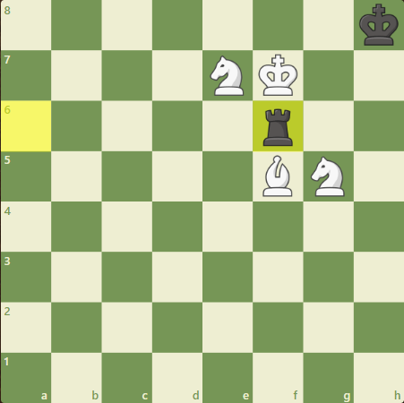

Game Rules
Set up the board
At the beginning of the game the chessboard is laid out so that each player has the white (or light) color square in the bottom right-hand side.

The chess pieces are then arranged the same way each time. The second row (or rank) is filled with pawns. The rooks go in the corners, then the knights next to them, followed by the bishops, and finally the queen, who always goes on her own matching color (white queen on white, black queen on black), and the king on the remaining square.
Turns
The player with the white pieces always moves first. Therefore, players generally decide who will get to be white by chance or luck such as flipping a coin or having one player guess the color of the hidden pawn in the other player's hand. White then makes a move, followed by black, then white again, then black, and so on until the end of the game. Being able to move first is a tiny advantage that gives the white player an opportunity to attack right away.
Draws
Draws are a big part of chess. From saving you from a lost position to securing first place in a tournament, every player needs to understand how ties happen.
What Is A Draw In Chess?
A draw occurs in chess when neither player wins nor loses—the game ends in a tie. Either
of the two players can ask for a draw, and after the game is tied, each player wins half a point.
Draws are more common among higher-rated players, but even if you're still a beginner or
intermediate player, you should know all the drawing rules so no one catches you by surprise.
Types Of Draw
According to the FIDE rules, there are five different scenarios where a game can end in a draw. In most cases, one player has to propose or claim a tie, but in some specific situations, an arbiter may decide to end the game and claim a draw.
Stalemate
A draw by stalemate happens when the player who needs to move has no legal moves and his king is not in check (otherwise, that would be a checkmate!). For a stalemate to happen, the move that produced the position has to be legal.

Sometimes, grandmasters find creative ways to avoid losing by making use of the stalemate rule. You can see one example of this in the diagram below! In the following game, legendary GM Garry Kasparov playing as Black found a way to draw against GM Anatoly Karpov by taking advantage of the stalemate rule.
Dead position
A dead position happens when neither player can legally checkmate the opponent's king. If the game reaches this
situation and the move that generated the position is legal, the game ends in a tie.
Look at this example of a dead position:

One of the most common instances of dead positions is when there is insufficient material for either player to
checkmate their opponent. This type of draw can happen even when one of the players runs out of time, provided
the other player does not have enough material to deliver checkmate.
Here are the piece combinations that lead to a draw by insufficient material:
- King vs. king
- King and bishop vs. king
- King and knight vs. king
- King and bishop vs. king and bishop
of the same color as the opponent's bishop
As you can see, this rule is very generous to the type of checkmates that players can reach.
Typically, you would not be able to checkmate your opponent if you had just a king and a bishop.
If your opponent has other pieces on the board and blunders, however, their king could be trapped and mated.
This rule led arbiters to award GM Magnus Carlsen with a win and the title in the 2019 World Blitz championship.
Some people argue that the game should have ended in a draw since Carlsen had only a piece to fend for himself.
But if GM Alireza Firouzja played terribly, he could still be mated by Carlsen.
Mutual agreement
If for any reason, both players agree to a draw, the game immediately ends, and both win half a point. For
this type of tie to happen, one of the players must propose a draw, and the other player must accept it.
If the other player refuses the offer or keeps playing, the game is not tied.
In this game by Carlsen and GM Fabiano Caruana for the last standard time control round of the World Chess
Championship in 2018, they both agreed to a draw. This tie led the match to tiebreaks and caused controversy
because many people thought Carlsen had good winning chances with more time on the clock.
Threefold repetition
A player can ask for a draw when a position is reached (or is about to be reached) at least three times in the
same game. This repetition is only possible when all the pieces of the same size and color are occupying
identical squares as they were before, and all the possible moves are also the same. As a result, if capturing
en passant was previously an option that is no longer available, this position is not considered a repetition.
When a threefold repetition occurs, the game does not necessarily need to end immediately. The game only ends
in a draw if the player who has the move requests a tie.
Most commonly, threefold repetitions happen when a player is losing and finds a perpetual check to save his game.
50 move rule
If both players make 50 consecutive moves without capturing any pieces or moving any pawns, any player can ask for
a draw if it is their turn to play. This rule exists to prevent games from prolonging too much when neither player
is making any progress.
To make good use of this kind of draw, you need to learn the basic checkmating patterns. Nothing is worse than
having enough pieces to checkmate your opponent's lonely king but being unable to do so.